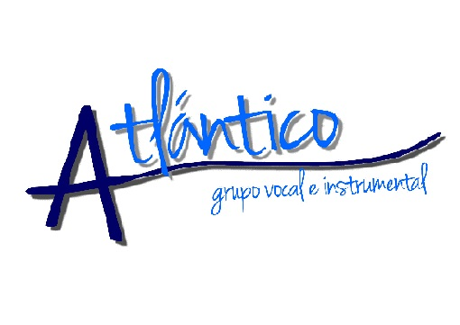
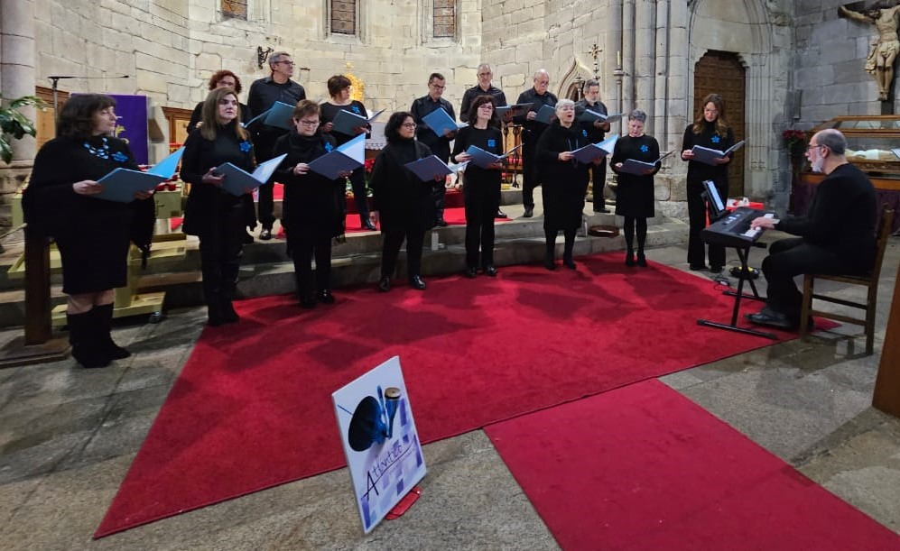

GRUPO VOGAL E INSTRUMENTAL ATLÁNTICO
Idioma:
Castellano
Galego
Inglés

Historial do Grupo
Currículo - Director
Contacto
Ligazóns a vídeos de actuación
Love of my life
Act. Santiago de Compostela - 30/4/2022
Ave María - Alejandro Guillermo
I'm going up a yonder
Cando me ves así
A Virxe ten o neno nos brazos
Se che apetece coñecernos e unirte ao noso proxecto musical, non dubides en
escribirnos
.